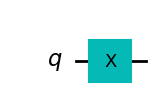
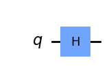
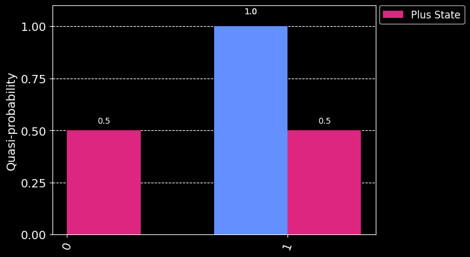
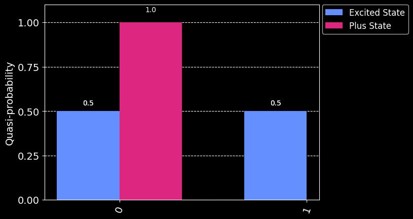
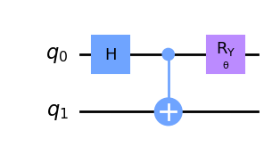
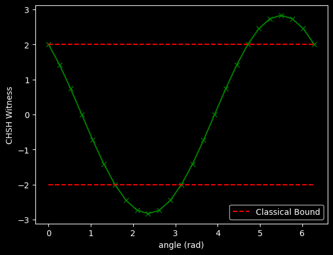

from qiskit.circuit import QuantumCircuit
from qiskit.primitives import Estimator, Sampler
from qiskit.quantum_info import SparsePauliOp
from qiskit.visualization import plot_histogram
import numpy as np
import matplotlib.pyplot as plt
plt.style.use('dark_background') # optionalHow quantum mechnaics can’t be described by the hidden variable theory.
Lab 2 - Creating Entanglement with Qiskit
This lab demonstrates interesting properties of entangled qubits. In particular, we will consider two experiments: - CHSH Inequality Violation - this shows that quantum mechanics cannot be explained by a local hidden variable theory - Teleportation - teleport an arbitrary quantum state using an entangled qubit pair as a resource
In particular, this lab demonstrates how to use new features from IBM Quantum - Primitives - abstract measurement and error mitigation for scalable quantum computing - Dynamic Circuits - mid-circuit measurement and feed-forward within the qubits’ coherence time
Getting Started
Start by importing some libraries we need, including the Sampler and Estimator primitives from Qiskit. While the primitives from qiskit.providers use a local statevector simulator by default, the syntax within this lab is easily generalizable to running experiments on real systems.
To run on real hearware requires a Qiskit Runtime service instance. If you haven’t done so already, follow the instructions in the Qiskit Getting started guide to set one up. TODO: include video links and such. After setup, import the Sampler and Estimator primitives from qiskit_ibm_runtime instead. Additionally we will need QiskitRuntimeService and Session, which form the interface between Qiskit and Qiskit IBM Runtime. Then the below exercises can be run on real systems by instantiating the primitives in this way (as opposed to from qiskit.primitives):
from qiskit_ibm_runtime import QiskitRuntimeService, Session, Sampler, Estimator
service = QiskitRuntimeService()
backend = service.get_backend('...')
session = Session(service=service, backend=backend)
sampler = Sampler(session=session)
estimator = Estimator(session=session)where additional options can be specified in the Sampler and Estimator with the Options class. See this how-to for using Primitives with Runtime Sessions.
CHSH Inequality Violation
Warm Up
Create circuits that put the qubit in the excited \(|1\rangle\) and superposition \(|+\rangle\) states, respectivly, and measure them in different bases. This is done first with the Sampler primitive (which is most similar to the backend.run() used in the previous lab), and then with the Estimator primitive to show how measurement is abstracted in that we do not need to worry about rotating the qubit into the appropriate measurement basis. The primitives will be executed withing the Session context which allows efficiency to optimize workloads.
# create excited |1> state
qc_1 = QuantumCircuit(1)
qc_1.x(0)
qc_1.draw('mpl')
# create superposition |+> state
qc_plus = QuantumCircuit(1)
qc_plus.h(0)
qc_plus.draw('mpl')
Sampler Primitive
First use the Sampler to measure qubits in the \(Z\)-basis (the physical basis in which qubits are measured). The Sampler will count the number of outcomes of the \(|0\rangle\) state and \(|1\rangle\) state, normalized by the number of shots (experiments performed). The Sampler also offers the ability to easily perform error mitigation (which is covered in Lab 5), which modifies this calculation, and hence the outcomes are refered to as quasi-probabilities.
Measurments must be present in the circuit when using the Sampler primitive. Then the Session context is opened, the Sampler is instantiated, and sampler.run() is used to send the circuits to the backend, similar to the backend.run() syntax you may already be familiar with.
qc_1.measure_all()
qc_plus.measure_all()
sampler = Sampler()
job_1 = sampler.run(qc_1)
job_plus = sampler.run(qc_plus)job_1.result().quasi_dists[{1: 1.0}]job_plus.result().quasi_dists[{0: 0.4999999999999999, 1: 0.4999999999999999}]legend = ["Excited State", "Plus State"] # TODO: Excited State does not appear
plot_histogram([job_1.result().quasi_dists[0], job_plus.result().quasi_dists[0]], legend=legend)
The result for the excited state is always \(|1\rangle\) wheres it is roughly half \(|0\rangle\) and half \(|1\rangle\) for the plus superposition state. This is because the \(|0\rangle\) and \(|1\rangle\) states are eigenstates of the \(Z\) operator (with \(+1\) and \(-1\) eigenvalues, respectively).
Let’s switch and measure in the \(X\) basis. Using the Sampler we must rotate the qubit from the \(X\)-basis to the \(Z\)-basis for measurement (because that is the only basis we can actually perform measurement in).
qc_1.remove_final_measurements()
qc_plus.remove_final_measurements()
# rotate into the X-basis
qc_1.h(0)
qc_plus.h(0)
qc_1.measure_all()
qc_plus.measure_all()sampler = Sampler()
job_1 = sampler.run(qc_1)
job_plus = sampler.run(qc_plus)plot_histogram([job_1.result().quasi_dists[0], job_plus.result().quasi_dists[0]], legend=legend)
Now we see the opposite: the plus superposition always give the 1 result, hence an eigenstate of the \(X\) operator, whereas the excited \(|1\rangle\) yields a roughtly fifty-fifty split. The \(|+\rangle\) and \(|-\rangle\) states are eigenstates of the \(X\) operator, with eigenvalues \(+1\) and \(-1\), respectively. This is good to remember when considering how the Estimator works in the next subsection.
Estimator Primitive
The Qiskit Runtime Primitives allow us to abstract measurement into the Estimator primitive, where it is specified as an observable. In particular, we can construct the same circuits, the excited \(|1\rangle\) and superposition \(|+\rangle\) as before. However, in the case of the Estimator, we do not add measurements to the circuit. Instead, specify a list of observables which take the form of Pauli strings. In our case for a measurement of a single qubit, we specify 'Z' for the \(Z\)-basis and 'X' for the \(X\)-basis.
qc2_1 = QuantumCircuit(1)
qc2_1.x(0)
qc2_plus = QuantumCircuit(1)
qc2_plus.h(0)
obsvs = list(SparsePauliOp(['Z', 'X']))estimator = Estimator()
job2_1 = estimator.run([qc2_1]*len(obsvs), observables=obsvs)
job2_plus = estimator.run([qc2_plus]*len(obsvs), observables=obsvs)job2_1.result()EstimatorResult(values=array([-1., 0.]), metadata=[{}, {}])# TODO: make this into module that outputs a nice table
print(f' | <Z> | <X> ')
print(f'----|------------------')
print(f'|1> | {job2_1.result().values[0]} | {job2_1.result().values[1]}')
print(f'|+> | {job2_plus.result().values[0]} | {job2_plus.result().values[1]}') | <Z> | <X>
----|------------------
|1> | -1.0 | 0.0
|+> | 0.0 | 0.9999999999999998Just as before, we see the \(|1\rangle\) state expectation in the \(Z\)-basis is \(-1\) (corresponding to its eigenvalue) and around zero in the \(X\)-basis (average over \(+1\) and \(-1\) eigenvalues), and vice-versa for the \(|+\rangle\) state (although its eigenvalue of the \(X\) operators is \(+1\)).
CHSH Inequality
Imagine Alice and Bob are given each one part of a bipartite entangled system. Each of them then performs two measurements on their part in two different bases. Let’s call Alice’s bases A and a and Bob’s B and b. What is the expectation value of the quantity
\[ \langle CHSH \rangle = \langle AB \rangle - \langle Ab \rangle + \langle aB \rangle + \langle ab \rangle ? \]
Now, Alice and Bob have one qubit each, so any measurement they perform on their system (qubit) can only yield one of two possible outcomes: +1 or -1. Note that whereas we typically refer to the two qubit states as \(|0\rangle\) and \(|1\rangle\), these are eigenstates, and a projective measurement will yield their eigenvalues, +1 and -1, respectively.
Therefore, if any measurement of A, a, B, and b can only yield \(\pm 1\), the quantities \((B-b)\) and \((B+b)\) can only be 0 or \(\pm 2\). And thus, the quantity \(A(B-b) + a(B+b)\) can only be either +2 or -2, which means that there should be a bound for the expectation value of the quantity we have called
\[ |\langle CHSH \rangle| = |\langle AB \rangle - \langle Ab \rangle + \langle aB \rangle + \langle ab \rangle| \le 2. \]
Now, the above discussion is oversimplified, because we could consider that the outcome on any set of measurements from Alice and Bob could depend on a set of local hidden variables, but it can be shown with some math that, even when that is the case, the expectation value of the quantity \(CHSH\) should be bounded by 2 if local realism held.
But what happens when we do these experiments with an entangled system? Let’s try it!
The first step is to build the observable \[
CHSH = A(B-b) + a(B+b) = AB - Ab + aB +ab
\] where \(A, a\) are each one of \(\{IX, IZ\}\) for qubit 0 and \(B, b\) are each one of \(\{XI, ZI\}\) for qubit 1 (corresponding to little-endian notation). Paulis on different qubits can be composed by specifying order with a Pauli string, for example instantiating a SparsePauliOp with the 'ZX' argument implies a measurement of \(\langle X \rangle\) on q0 and \(\langle Z \rangle\) on q1 . This tensor product (combining operations on different qubits) can be explicitly stated using the .tensor() method. Additionally, combining operations on the same qubit(s) uses the compositional product with the .compose() method. For example, all these statements create the same Pauli operator:
from qiskit.quantum_info import SparsePauliOp
ZX = SparsePauliOp('ZX')
ZX = SparsePauliOp(['ZX'], coeffs=[1.]) # extendable to a sum of Paulis
ZX = SparsePauliOp('Z').tensor(SparsePauliOp('X')) # extendable to a tensor product of Paulis
ZX = SparsePauliOp('XZ').compose(SparsePauliOp('YY')) # extendable to a compositional product of PaulisEx 1 - create an operator for CHSH witness
from qiskit_ibm_runtime import QiskitRuntimeService, Estimator, SessionZZ = SparsePauliOp.from_list([("ZZ", 1)])
ZX = SparsePauliOp.from_list([("ZX", 1)])
XZ = SparsePauliOp.from_list([("XZ", 1)])
XX = SparsePauliOp.from_list([("XX", 1)])ZZ +ZXSparsePauliOp(['ZZ', 'ZX'],
coeffs=[1.+0.j, 1.+0.j])obsv = ZZ - ZX + XZ + XX # create operator for chsh witnessfrom qc_grader.challenges.qgss_2023 import grade_lab2_ex1
grade_lab2_ex1(obsv)Submitting your answer. Please wait...
Congratulations 🎉! Your answer is correct and has been submitted.Create Entangled Qubit Pair
Next we want to test the \(CHSH\) observable on an entangled pair, for example the maximally-entangled Bell state \[
|\Phi\rangle = \frac{1}{\sqrt{2}} \left(|00\rangle + |11\rangle \right)
\] which is created with a Hadamard gate followed by a CNOT with the target on the same qubit as the Hadamard. Due to the simplifaction of measuring in just the \(X\)- and \(Z\)-bases as discussed above, we will rotate the Bell state around the Bloch sphere which is equivalant to changing the measurement basis as demonstrated in the Warmup section. This can be done by applying an \(R_y(\theta)\) gate where \(\theta\) is a Parameter to be specified at the Estimator API call. This produces the state \[
|\psi\rangle = \frac{1}{\sqrt{2}} \left(\cos(\theta/2) |00\rangle + \sin(\theta/2)|11\rangle \right)
\]
from qiskit.circuit import Parameter
theta = Parameter('θ')
qc = QuantumCircuit(2)
qc.h(0)
qc.cx(0, 1)
qc.ry(theta, 0)
qc.draw('mpl')
Next we need to specify a Sequence of Parameters that show a clear violation of the CHSH Inequality, namely \[
|\langle CHSH \rangle| > 2.
\] Let’s make sure we have at least three points in violation.
Ex 2 - Create a Parameterization (i.e., list, array) of the angle in the above circuit (in radians)
Hint: Note the type for the parameter_values argument is Sequence[Sequence[float]].
number_of_phases = 25
phases = np.linspace(0, 2 * np.pi, number_of_phases)
angles = []
for p in phases:
angles.append([p])
angles[[0.0],
[0.2617993877991494],
[0.5235987755982988],
[0.7853981633974483],
[1.0471975511965976],
[1.308996938995747],
[1.5707963267948966],
[1.832595714594046],
[2.0943951023931953],
[2.356194490192345],
[2.617993877991494],
[2.8797932657906435],
[3.141592653589793],
[3.4033920413889422],
[3.665191429188092],
[3.926990816987241],
[4.1887902047863905],
[4.45058959258554],
[4.71238898038469],
[4.974188368183839],
[5.235987755982988],
[5.497787143782138],
[5.759586531581287],
[6.021385919380436],
[6.283185307179586]]Test your angles and observable by running with the Estimator before submitting to the grader.
from qiskit.primitives import Estimator, Samplerestimator = Estimator()
job = estimator.run([qc]*len(angles), observables=[obsv]*len(angles), parameter_values=angles)
exps = job.result().values
plt.plot(angles, exps, marker='x', ls='-', color='green')
plt.plot(angles, [2]*len(angles), ls='--', color='red', label='Classical Bound')
plt.plot(angles, [-2]*len(angles), ls='--', color='red')
plt.xlabel('angle (rad)')
plt.ylabel('CHSH Witness')
plt.legend(loc=4)<matplotlib.legend.Legend at 0x7fcb80419060>
Did you see at least 3 points outside the red dashed lines? If so, you are ready to send to the grader!
from qc_grader.challenges.qgss_2023 import grade_lab2_ex2
grade_lab2_ex2(obsv, angles)Submitting your answer. Please wait...
Congratulations 🎉! Your answer is correct and has been submitted.import qiskit.tools.jupyter
%qiskit_version_tableVersion Information
| Qiskit Software | Version |
qiskit-terra |
0.24.1 |
qiskit-aer |
0.12.1 |
qiskit-ibmq-provider |
0.20.2 |
qiskit |
0.43.2 |
qiskit-nature |
0.6.2 |
qiskit-finance |
0.3.4 |
qiskit-optimization |
0.5.0 |
qiskit-machine-learning |
0.6.1 |
| System information | |
| Python version | 3.10.8 |
| Python compiler | GCC 10.4.0 |
| Python build | main, Nov 22 2022 08:26:04 |
| OS | Linux |
| CPUs | 8 |
| Memory (Gb) | 31.211322784423828 |
| Fri Jul 21 19:11:24 2023 UTC | |